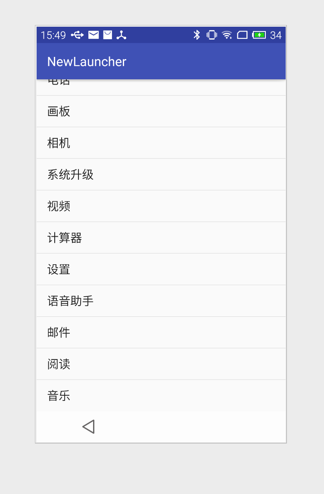
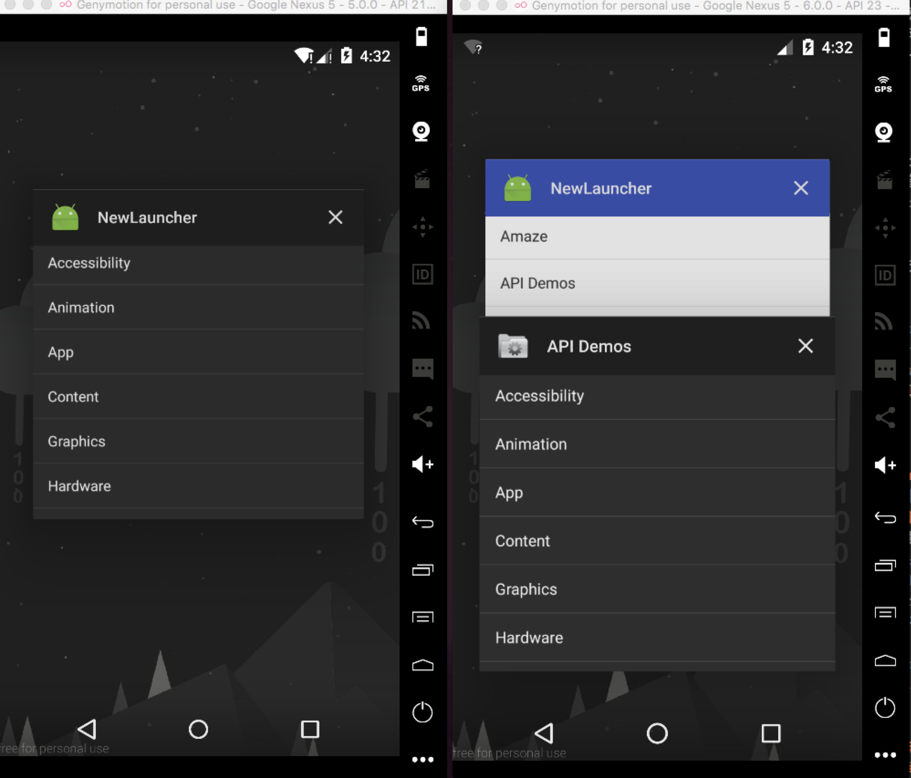
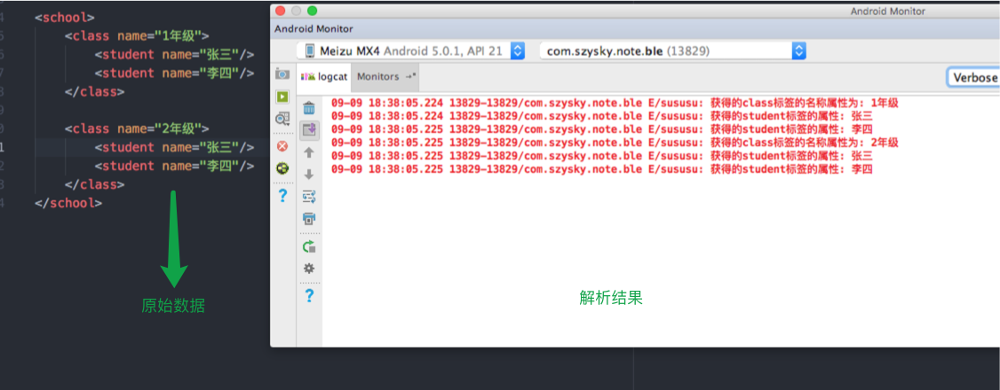

这本书属于入门, 有很多内容可以当做扩展来了解一些API, 并且有的时候可以适当的利用Google提供好的API来做一些高效开发节约时间成本. 原理东西本书偏少. 可以学习本书中的代码的编写风格, 书中代码都是采用MVC模型来编写的. 就写这么多, 下面开始整理一些小知识点.
关于Camera和SurfaceView的知识点练习都保存在仓库中的Criminal项目中.
git地址
MediaPlay播放音频
MediaPlayer是一个支持音频及视频文件播放的Android类. 可播放不同的来源(本地或网络流媒体).多种格式(WAV, MP3, MPEG-4, 3GPP等)的多媒体文件.
直接贴出代码
/** |
记得在res/raw/放置要播放的文件. 一个简便的播放就是这样.详细的查看官网的对于MediaPlayer的介绍
播放视频
关于播放视频, Android提供了多种实现方式. 其一便是使用上面说到的MediaPlayer, 而我们需要做的只是设置在哪里播放即可.
在Android系统中, 快速刷新显示的可视图像(如视频)是在SurfaceView中显示的. 准确的说, 是在SurfaceView内嵌的Surface中显示的. 通过获取SurfaceView的SurfaceHolder可是实现在Surface上显示视频. 简单的说就是通过MediaPlayer.setDisplay(SurfaceHolder)方法, 将MediaPlayer类于SurfaceHolder关联起来即可.
通常来说直接使用VideoView实例来播放视频会更简单些, 不同于SurfaceView于MediaPlayer之间的交互, VideoView是与MediaController交互的, 这样可以方便地提供视频播放界面. 而VideoView是不接受ID资源的. 而只接受文件路径或者URI对象.
创建一个指向Android资源的URI, 可使用如下代码:
Uri resourceUri = Uri.parse("android.resource://包名/raw/文件名称");
使用了android.resource格式, 用包名作为主机名, 资源文件类型与文件名称组成了一个路径用以创建URI.完成后就可以将其传给VideoView使用.
Camera与SurfaceView
Camera:提供了对设备相机硬件级别的调用. 相机是一种独占性资源: 一次只能有一个activity调用(如果你的应用没有释放相机资源,那么系统的相机也就无法调起使用)SurfaceView:这是一种特殊的视图, 可直接将要显示的内容渲染输出到设备的屏幕上.
首先既然使用了相机那么就需要添加相机的使用权限
<!--增加相机使用权限--> |
uses-feature对我们貌似没什么用处.
既然是拍照那么很多都是横屏的,所以清单文件中把所在的<activity>设置横屏模式
<activity android:name=".activity.CrimeCameraActivity" |
开始了解相机使用
public static Camera open(int)public static Camera release()
这两个方法是管理Camera的方法. 最好用户可以与界面进行交互分别调用. 如onResume()和onPause()
|
相机打开了现在轮到Surface,因为Camera的拍照需要它
SurfaceView类实现了SurfaceHolder接口. 首先我们先获取SurfaceHolder实例.(在Activity#onCreate或者Fragment#onCreateView()只要能保证布局已经加载就可以)
/** |
SurfaceHolder是我们与Surface对象联系的纽带. Surface对象代表着原始像素数据的缓冲区.
Surface对象也有生命周期: SurfaceView出现在屏幕上时, 会创建Surface; SurfaceView从屏幕上消失的时候,Surface随即被销毁. Surface不存在的时候, 必须保证没有任何内容要在它上面绘制.
不像其他视图一样, SurfaceView及其协同工作对象都不会自我绘制内容. 对于任何想要将内容绘制到Surface缓冲区的对象, 我们都称其为Surface的客户端. 比如这里的Camera
为了对应Surface各个生命周期, SurfaceHolder提供了另外一个接口SurfaceHolder.Callback来关联.
确定预览界面的大小
可能看到了surfaceChanged()的生命周期回调中设置了Camera实例的一个属性大小.
首先要知道相机的预览大小不能随意设置, 如果设置了不可接受的值有可能会出现崩溃. 所以我们应该先获取到设备相机所支持的预览尺寸大小. 通过Camera.Parameters类中的getSupportedPreviewSizes()就可以获取到相机的支持的预览尺寸列表.
这个方法返回的是一个List<Camera.Size>, 泛型Camera.Size每一个实例都封装了一个具体的图片宽高尺寸. 利用getSupportedSize()简便的比较方法可以达到选择一个最大的像素尺寸.
有可能你会需要先检测设备是否有前后相机
可以获取到PackageManager后, 调用hasSystemFeature(String)方法并传入表示设备特色功能的常量即可根据布尔值来判断. FEATURE_CAMERA常量代表后置相机, FEATURE_CAMERA_FRONT常量代表前置相机.
目前为止相机开启并渲染值Surface应该没问题了,下面就是利用Camera进行照片
主要逻辑就是从相机的实时预览中捕获一帧图像, 然后将其保存为JPEG格式的文件. 而要进行拍摄需要Camera#takePicture(Camera.shutterCallback shutter, Camera.PictureCallback raw, Camera.PictureCallback jpeg)
shutterCallback此回调里面的方法会在相机捕获图像的时候调用, 但此时图像数据还未处理完成.第一个PictureCallback回调方法是在原始图像数据可用时调用, 通常来说, 是在加工处理原始图像数据且没有存储之前.第二个PictureCallback回调方法是在JPEG版本的图像可用时候调用.
如果不需要某一个步骤的回调可以直接传递null. 这里我们实现参数一和参数三的回调, 首先定义回调如下
/** |
回调定义好了之后, 剩下的只需要搞一个按钮, 添加点击事件通过调用Camera的实例的takePicture()传入自定义的回调方法即可.
扩展:
如果需要显示大图可以直接DialogFragment.
- 首先设置
Fragment的样式为DialogFragment.STYLE_NO_TITLE. - 因为想要的效果为一个图片查看放大, 那么不需要显示
AlertDialog视图自带的标题和按钮. 所以可以直接复写onCreateView()方法使用一个简单视图, 比覆盖onCreateDialog()方法使用Dialog更简单.快捷灵活. - 通过文件的路径得到
Bitmap设置到在onCreateView()中创建并返回的ImageView即可.
隐式Intent
在Android系统中, 使用隐式Intent可以启动其他应用的activity. 在显示Intent中, 需要指定要启动的activity类. 操作系统会负责启动它. 而隐式Intent中, 只要描述清楚要完成的任务, 操作系统会找到合适的应用. 并在其中启动相应的activity.
典型的隐式Intent的组成
- 要执行的动作(action): 通常以
Intent类中的常量进行表示. 例如要访问查看某个URL,可以使用Intent_ACTION_VIEW; 要发送邮件,可以使用Intent.ACTION_SEND - 要发送的数据位置以及数据类型: 数据位置的话可能会是某个网页的
URL,也可能是指向某个文件的URI, 或者指向ContentProvider中某条记录的某个内容URI; 数据类型这里指的是MIME形式的数据类型, 如text/html或者audio/mpeg3. 如果一个intent包含某类数据的位置, 那么通常可以从中推测出数据的类型. - 可选类别(category): 如果
action用于描述具体要做什么, 那么类别通常用来描述我们何时,何地或者说如何使用某个activity.android.intent.category.LAUNCHER类别表明, activity应该显示在顶级应用启动器中. 而android.intent.category.INFO类别表明,虽然activity向用户显示了包信息, 但它不应该显示在启动器中.
而在配置清单文件中的intent过滤器设置时
<action>: 告诉操作系统, activity能够处理指定的哪个action动作.<category>: 一般情况下都是要指定DEFAULT类别. 每发起隐式intent如果没有指定category那么系统都会默认的添加DEFALUT`类别.
操作系统进行隐式Intent寻找的时候, 是不需要使用数据(extra)来参与匹配规则的.
利用Intent选择器
比如打开一个视频文件的时候, 如果手机上有多个选择的话可能会弹出一个全部列表, 然后选择一个进行播放, 而之后会发现再也不会询问用户使用哪个视频播放软件进行播放. 对于这种情况有时候或许不需要, 这个时候就可以使用选择器来创建一个activity来展示可打开的软件, 每次都进行选择. 使用很简单.
Intent intent = new Intent(); |
通过createChooser()方法重新构建一个intent即可, 参数二传递的字符串是用来作为弹出的选择界面的标题.
再说一下获取联系人信息
如果要获取手机通讯录, 那么要指定action,并且要找指定获取位置; action对应的Intent.ACTION_PICK. 获取的位置为ContactsContract.Contacts.CONTENT_URI. 就是请求Android协助从手机联系人数据库获取某个具体联系人.
打开手机联系人代码
// 打开联系人Contract列表 |
以上代码很容易懂, 并且做了一定的防错处理. 接下来就准备接收返回结果就可以在onActivityResult()中
if (requestCode == REQUEST_CONTACT){ |
上面获得了一个Cursor, 因为已经知道Cursor只是包含一条记录, 所以将Cursor移动到第一条记录并获取它的字符串形式.就是姓名.
上面代码中有两句话是对可以响应的activity做检查. 通过PackageManager#queryIntentActivitys()返回集合的size大小来决定是否可以执行后续的操作.
打电话的隐式Intent
电话相关的Intent有两种
Intent.ACTION_DIAL: 选择联系人(得到号码发送一个tel:xxx数据uri)之后会停止到拨号界面等待用户手动呼叫Intent.ACTION_CALL: 选择联系人(得到号码发送一个tel:xxx数据uri)之后会立即拨打出去. 而不会等待用户的手动拨打.
深入了解Intent
利用隐式的Intent可以创建一个启动器来替换系统默认的启动器应用. 例如这样:

展示出来手机上面的所有应用, 选择一个并可以打开, 有点丑, 你也可以设置上图片. 显示实现这个直接贴出代码.
|
首先利用PackageManager对Main/Launcher进行匹配, 这个没什么说的, 所有的应用都有一个启动入口就是这个. 可以得到所有应用的入口信息集合.
这里有一点需要了解: MAIN/LAUNCHERintent过滤器不能startActivity()这种方式发送的MAIN/LAUNCHER相匹配. 因为对于类别category为Launcher的时候, 系统是不希望你通过隐式Intent的方式去打开. 而是要你使用显示intent. 一般情况下隐式Intent打开的时候系统总是会给你添加category为default的类别. 所以可以认为隐式Intent打开的基本都是过滤器信息中类别包含为Default的类别的Intent. 而这一点在系统的入口activity过滤其中却无法得到保证.
定义了MAIN/LAUNCHER过滤器的activity是应用的主要入口, 它只关心作为应用主要入口点要处理的工作. 通常不关心自己是否属于默认的主要入口点, 因此,他也就不必包含CATEGORY_DEFAULT类别.
但好在我们可以通过隐式的MAIN/LAUNCHER查到匹配的activity集合信息, 而不需要先打开. 通过集合中的每个activity的ResolveInfo实例得到ActivityInfo我们也就可以得到包名, 类名. 那么就可以通过显示Intent打开! 如下代码
通过上面得到的集合, 随便获取一个resolveInof实例.
ResolveInfo resolveInfo = (ResolveInfo) resolveInfos.get(0);; |
上面使用的是setClassName()方法, 这个方法可以自动创建组件名, 也可以自己通过类名和包名创建一个ComponentName, 然后使用setComponent()创建一个显示的intent.
上面还添加了一个FLAG, 主要的区别就是没有这个Flag的话, 那么打开的新应用的界面本质上是存在我们的应用任务栈中, 如果有那么就会在属于自己独立的任务中. 如下图, 在我们自己的应用打开同一个任务. 然后查看任务管理器. (前面为没有添加flag的)

至此, 现在这个应用可以得到手机的全部应用并可以做为展示列表. 但是还没完, 还差一点将我们这个应用作为设备主屏幕.
没有人愿意通过一个应用来启动另一个应用, 所以要做的就是替换Android主界面配置我们应用的启动activity再添加两个类别category,
<activity android:name=".NerdLauncherActivity"> |
应用图标与任务重排
通过上面的获得的ResolveInfo.loadLable()方法, 可以获取各个activity的名称, 其中还有一个方法loadIcon()可以使用该方法为每一个应用加载显示图标.
关于任务重排, 需要使用ActivityManager系统服务, 该系统服务提供了当前运行activity, 任务以及应用的有用信息. 通过Activity.getSystemService(Activity.ACTIVITY_SERVICE)来获取ActivityManager然后调用ActivityManager实例的getRunningTasks()方法, 得到按照时间由近到久的排序的任务列表. 在调用moveTaskToFront()方法实现将任意任务切换到前台. 关于任务切换需要一些权限配置, 具体参考android文档.
进程和任务
- 进程: 是操作系统创建的供应用对象生存以及应用运行的地方. 包含了应用的全部运行代码和对象.
- 每一个
activity实例都仅存在一个进程和一个任务中. 这也是进程与任务的唯一类似的地方. - 任务: 只包含
activity, 这些activity通常来自不同应用.
activity赖以生存的任务和进程有可能会有所不同. 比如上面的深入了解Intentn中给出的图片参考. 可以发现. 当我没有指定new_task的时候, 新的应用打开的activity是和我们的应用在一个任务栈的. 这也就意味当后退的时候虽然看着只是界面的切换,但是实际上发生了进程间的切换
XmlPullParser使用
XmlPullParser接口采用拉的方式从xml数据流中获取解析事件. Android内部也使用XmlPullParser接口来实例化布局文件.
// 模拟一个xml字符串 |
运行结果:

代码中的注释已经很详细了, 不用再做解释. 有一点需要注意, 如果要获得便签的内容的话,那么别忘了考虑到空白字符或者换行符的也是存在的.